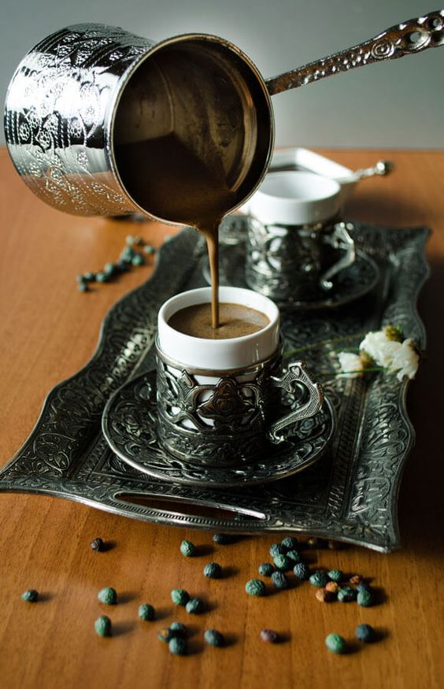

s
g
g
g
g
g
g
g
g
g
g
g
g
Самый горячий кофе
g
g
g
g
g
g
g
g
Кофейные зерна делятся на два вида: арабика и робуста . Мы рекомендуем и сам используем исключительно 100% арабику. В ней больше ароматических масел, которые влияют на вкус кофе. Представьте себе горький напиток, в который хочется добавить сахар — наверняка он приготовлен на основе робусты. Кофе из арабики более интересный и разнообразный, в нем могут раскрыться ноты шоколада, фруктов, орехов, спелых ягод и даже чая. Плантации арабики требуют особенного ухода, с одного дерева фермеры собирают почти 5 кг спелых ягод, а после обжарки остается примерно 1 кг зерна. Именно поэтому хороший кофе в зернах не может стоить дешево.
Наведите мышку, чтобы увидеть картунку
Вкус напитка определяет не только сорт, но и степень обжарки зерен. Поэтому можно выбрать качественный кофе , но ошибиться с обжаркой. Этого не произойдет, если знать, как термическая обработка влияет
на характеристики кофейных зерен.
Три основных степени обжаривания - слабую, среднюю и сильную, разделяют еще на несколько категорий.
Самая светлая обжарка - скандинавская, едва окрашивает зерна и придает им аромат свежего хлеба. Такой кофе практически не имеет цвета и аромата, зато его можно заваривать при минимальной температуре воды. При американской
(новоанглийской обжарке) зерна производят первый характерный щелчок, а их цвет меняется на бледно-коричневый. Вкус напитка все еще водянистый, но запах более выраженный. Следующая категория светлой обжарки городская.
В процессе нагревания зерна приобретают цвет светлого каштана, а в аромате четко выражен травяной оттенок.
В средней степени обычно обжаривают практически все сорта из Америки и Эфиопии, так как она является оптимальным вариантом, раскрывающим все лучшие свойства кофейных зерен. Городская полная обжарка проводится до второго щелчка,
при этом яблоки выделяют масло и приобретают красивый коричневый цвет и божественный аромат. Если для сорта характерна кислинка или растительный привкус, их можно почувствовать именно в этой стадии. Венская обжарка придает
зернам блеск и бархатистый вид, выделяет горчинку, карамельные и шоколадные нотки во вкусе напитка.
Сильная обжарка хороша для любителей крепкого кофе и сногсшибательным ароматом. Турецкая обжарка проводится до появления запаха подгорелого кофе. Из таких зерен получается густой напиток, со смешанным горько-сладким вкусом.
При европейской обжарке зерно полностью раскрывается и начинает дымиться. Это дает наилучший насыщенный вкус и резкий запах «с дымком». Итальянская обжарка отличается тем, что зерна несколько раз сильно нагревают и быстро
охлаждают.
В каждой стране совершенно разные природные условия, климат, почва, поэтому и сорта кофе значительно отличаются по химическому составу, и соответственно, по вкусу, аромату и другим свойствам. Помимо
климатических особенностей местности, на вкус кофе оказывают влияние высота произрастания, количество удобрений, количество солнечных дней, способ сбора урожая, способ обработки кофейной ягоды, хранение и обжарка.
В настоящее время кофе выращивают в более чем 70 странах Азии, Африки, Центральной и Латинской Америки.
АЗИЯ
Йемен (родина Мокко). Кофе обладает нежно-воздушным тонким ароматом, благородной кислотой и шоколадным послевкусием.
Острова Сулавеси (Целебес). Обладает сложным насыщенным вкусом с кислинкой и фруктовыми оттенками.
АФРИКА
Эфиопия (родина кофе). Характерным для выращенных в Эфиопии сортов кофе является очень яркий аромат, иногда напоминающий пряные травы. Кофе имеет богатый и насыщенный вкус (ноты «дикой природы») и очень долгое послевкусие.
Во вкусе лучших сортов присутствуют нотки крепленого вина.
Кения. Кенийский кофе считается одним из самых лучших в мире. Здесь, на красных почвах с повышенным содержанием железа, выращивается высокогорная арабика. Для кофе характерна высокая кислотность (самый кислый в мире), фруктовые,
апельсиновые, лимонные оттенки, иногда обладает ароматом зеленых яблок.
Танзания. Гора Килиманджаро – сердце кофейной индустрии. Здесь плодородные почвы, благоприятный климат. Вкус менее яркий, чем у кенийского кофе, но более ровный, мягкий, густой, с меньшей кислотностью
ЦЕНТРАЛЬНАЯ АМЕРИКА
Мексика .Для мексиканских сортов характерна слабая кислотность, несколько резковатый вкус и шоколадные оттенки во вкусе и аромате.
Гватемала .Кофе Гватемалы отличается гармоничным, сбалансированным вкусом, хорошо ощутимой цитрусовой кислинкой, в аромате кофе ощущаются пряные, шоколадные и цветочные ноты (флердоранж, маракуйя, дикие цветы, лесная ягода).
ЮЖНАЯ АМЕРИКА
Бразилия.
Бразилия – основной мировой поставщик кофе. Среди множества сортов кофе, выращиваемого в Бразилии, лучшие сорта обладают ровным, сбалансированным вкусом, иногда цветочным ароматом, ароматом жареного миндаля и чернослива.
Каким образом вы будете готовить кофе дома: с помощью эспрессо-машины или альтернативным методом?

|